Clique e segure para ver tudo
Sobre o projeto
O DynDyn é um projeto acadêmico focado no desenvolvimento do design de interface para um sistema de gestão financeira. O objetivo principal foi criar o layout visual de um sistema de controle financeiro pessoal e projetar uma experiência visual clara, intuitiva e responsiva para usuários que desejam organizar suas finanças de forma prática e moderna.
O projeto inclui telas como: painel principal com visão geral das finanças, controle de transações, relatórios e gráficos financeiros, gerenciamento de contas e ferramentas úteis como calculadoras.
Embora o sistema não tenha funcionalidades programadas e ainda não possua responsividade por estar incompleto, o layout foi desenvolvido com atenção à usabilidade, boa hierarquia visual e uma paleta de cores harmoniosa e de fácil leitura.
Tecnologias usadas